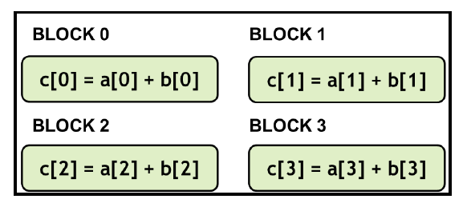
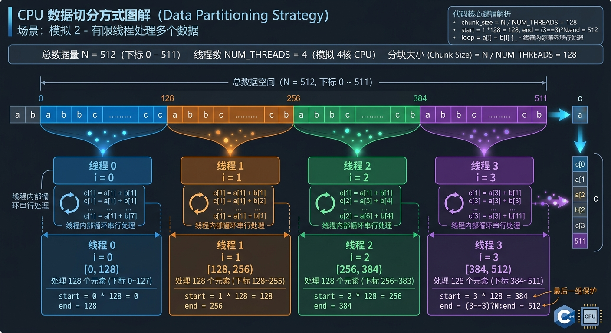
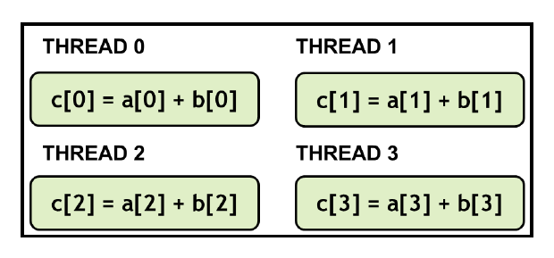
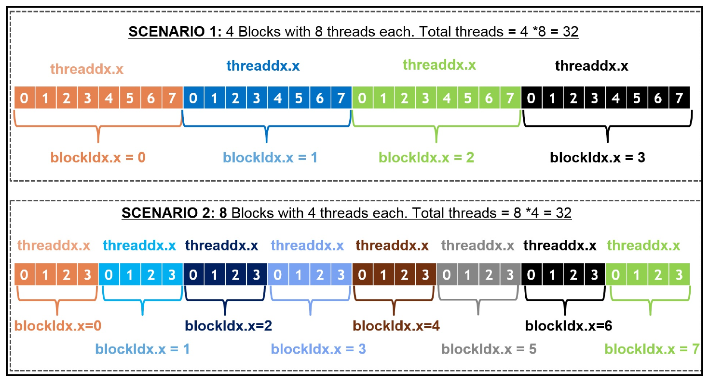
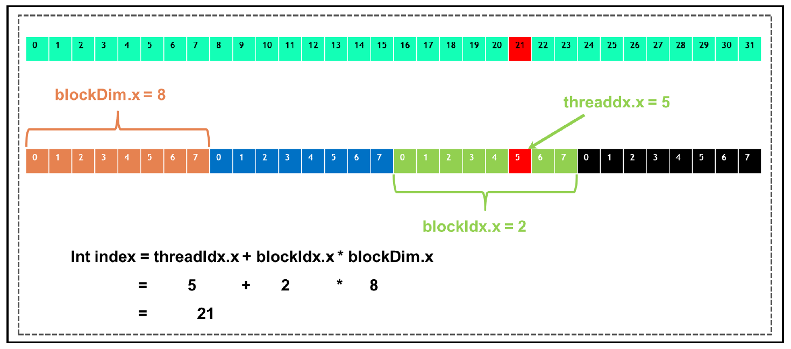

CUDA程序的基本结构¶
学习目标¶
- 学习CUDA程序的基本结构
- 学习向量加法的CUDA实现
1. 在CPU上实现一个串行的向量加法¶
向量在计算机里就是用一个数组来表示，最简单的向量加法使用循环就可以实现。
#include <stdio.h>
#include <stdlib.h>
#define N 512
void host_add(int *a, int *b, int *c)
{
for (int idx = 0; idx < N; idx++)
c[idx] = a[idx] + b[idx];
}
// basically just fills the array with index.
void fill_array(int *data)
{
for (int idx = 0; idx < N; idx++)
data[idx] = idx;
}
void print_output(int *a, int *b, int *c)
{
for (int idx = 0; idx < N; idx++)
printf("%d + %d = %d\n", a[idx], b[idx], c[idx]);
}
int main(void)
{
int *a, *b, *c;
int size = N * sizeof(int);
// Alloc space for host copies of a, b, c and setup input values
a = (int *)malloc(size);
fill_array(a);
b = (int *)malloc(size);
fill_array(b);
c = (int *)malloc(size);
host_add(a, b, c);
print_output(a, b, c);
free(a);
free(b);
free(c);
return 0;
}
然后我们可以编译：
nvcc -o vector_addition vector_addition.cu
注意：我们这里写的其实是一个标准的C程序，但是我们仍然可以使用nvcc编译器来编译。nvcc主要用于编译CUDA的代码，但是遇到标准的C/C++程序，它会自动调用系统的C/C++编译器(比如gcc/g++)来编译。我们把上面的命令改成系统的C编译器也是可以的，不过要加上-x选项，否则默认gcc不认识.cu这个后缀：
cc -x c -o vector_addition vector_addition.cu
然后执行：
./vector_addition
2. 一个CUDA程序的基本结构¶
因为GPU是一个加速设备，从体系架构来说，它是一个外部设备，或者说是独立协处理器。为了把计算从CPU迁移到GPU，我们需要如下的流程：
- 在 GPU 上分配内存：CPU 内存和 GPU 内存（显存）在物理上是相互独立的。
malloc函数是在 CPU 的内存（RAM）上分配空间。而 GPU 的核函数（Kernel）/设备函数只能访问已分配或指向设备内存的空间。为了在 GPU 上分配内存，我们需要使用cudaMallocAPI。与malloc命令不同，cudaMalloc不会直接返回指向已分配内存的指针；相反，它将一个指针的引用作为参数传入，并在该参数中更新已分配的内存地址。 - 将数据从主机（Host）内存传输到设备（Device）内存：接着，将主机端的数据复制到上一步使用
cudaMalloc命令分配好的设备内存中。用于在主机和设备之间（以及反向）复制数据的 API 是cudaMemcpy。与其他内存复制命令（如memcpy）类似，该 API 需要目标指针、源指针和传输大小。它额外需要的一个参数是复制方向，即我们是从主机复制到设备，还是从设备复制到主机。在最新版本的 CUDA 中，由于驱动程序能够自动识别指针指向的是主机内存还是设备内存，因此该参数是可选的。需要注意的是，cudaMemcpy还有一个异步版本，这将在其他章节中进行更详细的介绍。 - 调用并执行 CUDA 函数：我们通过使用三尖括号
<<<,>>>来调用核函数（Kernel），这两个括号内分别提供了网格（Block）和线程（Thread）大小的参数。我们将在完成所有步骤的介绍后，对此进行更详细的讲解。 - 同步：核函数的调用在本质上是异步的。为了让主机端确保核函数已经执行完毕，主机需要调用
cudaDeviceSynchronize函数。这可以确保之前启动的所有设备端调用都已执行结束。 - 将数据从设备内存传输回主机内存：使用相同的
cudaMemcpyAPI 将数据从设备复制回主机，以便进行后续处理或打印输出等验证工作。与第二步（从主机到设备）相比，这里唯一的区别是反转了复制方向——即目标指针指向主机内存，而源指针指向分配的设备内存。 - 释放已分配的 GPU 内存：最后，使用
cudaFreeAPI 释放之前在 GPU 上分配的内存。
3. vector_addition_gpu_block_only.cu¶
#include <stdio.h>
#include <stdlib.h>
#define N 512
void host_add(int *a, int *b, int *c)
{
for (int idx = 0; idx < N; idx++)
c[idx] = a[idx] + b[idx];
}
__global__ void device_add(int *a, int *b, int *c)
{
c[blockIdx.x] = a[blockIdx.x] + b[blockIdx.x];
}
// basically just fills the array with index.
void fill_array(int *data)
{
for (int idx = 0; idx < N; idx++)
data[idx] = idx;
}
void print_output(int *a, int *b, int *c)
{
for (int idx = 0; idx < N; idx++)
printf("\n %d + %d = %d", a[idx], b[idx], c[idx]);
}
int main(void)
{
int *a, *b, *c;
int *d_a, *d_b, *d_c; // device copies of a, b, c
int size = N * sizeof(int);
// Alloc space for host copies of a, b, c and setup input values
a = (int *)malloc(size);
fill_array(a);
b = (int *)malloc(size);
fill_array(b);
c = (int *)malloc(size);
// Alloc space for device copies of a, b, c
cudaMalloc((void **)&d_a, size);
cudaMalloc((void **)&d_b, size);
cudaMalloc((void **)&d_c, size);
// Copy inputs to device
cudaMemcpy(d_a, a, size, cudaMemcpyHostToDevice);
cudaMemcpy(d_b, b, size, cudaMemcpyHostToDevice);
device_add<<<N, 1>>>(d_a, d_b, d_c);
// Copy result back to host
cudaMemcpy(c, d_c, size, cudaMemcpyDeviceToHost);
print_output(a, b, c);
free(a);
free(b);
free(c);
cudaFree(d_a);
cudaFree(d_b);
cudaFree(d_c);
return 0;
}
3.0. 准备工作：主机（CPU）内存分配与初始化¶
在进入 GPU 步骤之前，主机会先打点好自己的数据。
int size = N * sizeof(int);
a = (int *)malloc(size); // 在 CPU 内存上为 a 分配空间
fill_array(a); // 填充数据 [0, 1, 2, ..., 511]
b = (int *)malloc(size); // 在 CPU 内存上为 b 分配空间
fill_array(b);
c = (int *)malloc(size); // 在 CPU 内存上为结果 c 预留空间
3.1 步骤 1：GPU 显存分配 (Memory Allocation on GPU)¶
因为 GPU 无法读取 CPU 的 malloc 空间，所以必须用 cudaMalloc 在显存中“圈地”。
// d_a, d_b, d_c 分别代表 device 端的 a, b, c
cudaMalloc((void **)&d_a, size);
cudaMalloc((void **)&d_b, size);
cudaMalloc((void **)&d_c, size);
细节：代码中传入的是
&d_a（指针的指针），因为cudaMalloc“接受一个指针引用作为参数，并在其中更新分配的显存地址”。
3.2 步骤 2：数据从主机传输到设备 (Host to Device Transfer)¶
通过 PCIe 总线，把 CPU 内存里的数据“卡车运送”到 GPU 显存中。
// 目标地址 (GPU), 源地址 (CPU), 字节大小, 复制方向
cudaMemcpy(d_a, a, size, cudaMemcpyHostToDevice);
cudaMemcpy(d_b, b, size, cudaMemcpyHostToDevice);
注意：此时
d_c（存放结果的显存）不需要复制，因为它是空的，正等着 GPU 往里写结果。
3.3 步骤 3：调用并执行 CUDA 核函数 (Execute Kernel)¶
激动人心的时刻！CPU 像发号施令一样，通过三尖括号启动 GPU 上的数千个工人。
device_add<<<N, 1>>>(d_a, d_b, d_c);
<<<N, 1>>>的含义：启动 N 个线程块（Blocks），每个块里有 1 个线程。在这个例子中 N=512，所以 GPU 一共启动了 512 个线程。- 核函数内部逻辑：
__global__ void device_add(int *a, int *b, int *c) { c[blockIdx.x] = a[blockIdx.x] + b[blockIdx.x]; }
核函数和普通函数的区别在于前面的__global__，相关的函数限定符还包括__device__和_host__。默认(不加任何限定符)的函数就是__host__，也就是说这个函数在CPU上执行，而__global__和__device__限定的函数只能在GPU上运行。
__global__ 和 __device__ 都是在 CUDA 中修饰 GPU 函数 的限定符（即它们修饰的函数最终都是在 GPU 上执行的），但它们的 调用源头 和 用途 有着本质的区别。
简单来说：__global__ 是 GPU 程序的入口，而 __device__ 是 GPU 内部的零部件。
| 特征 | __global__ (核函数 / Kernel) |
__device__ (设备函数) |
|---|---|---|
| 由谁调用 (Caller) | 主要由 CPU (Host) 调用。 (注：在支持动态并行的现代 CUDA 中也可以由 GPU 调用，但极少这样用) |
只能由 GPU (Device) 调用。 |
| 在哪里执行 (Callee) | 在 GPU 上并行执行。 | 在 GPU 上执行。 |
| 执行方式 | 必须通过特殊的 <<< >>> 语法启动，可以同时启动成千上万个线程。 |
像普通 C++ 函数一样直接调用（如 func(a)），由调用它的那个 GPU 线程独自执行。 |
| 返回值 | 必须是 void，不能有返回值。 |
可以有返回值（和普通 C++ 函数完全一样）。 |
这 512 个线程会 同时并行 执行这段代码。每个线程都有一个独一无二的工号 blockIdx.x（从 0 到 511）。工号为 5 的线程，就只负责计算 c[5] = a[5] + b[5]。
3.4 步骤 4：同步 (Synchronize)¶
- 代码：代码里 并没有 显式写出
cudaDeviceSynchronize()。 - 隐藏的秘密：因为紧接着的步骤 5 是
cudaMemcpy。在 CUDA 驱动的设计中，标准的cudaMemcpy是一个隐式的同步机制（阻塞式调用）。CPU 执行到下一行复制命令时，会强行停下来，直到 GPU 的核函数全部算完，才会开始往回复制数据。所以这里不需要手动写同步函数。
3.5 步骤 5：数据从设备传输回主机 (Device to Host Transfer)¶
GPU 算完了，结果都在显存 d_c 里。CPU 需要把结果运回自己的 RAM 盘（指针 c），这样才能用 printf 打印出来。
// 目标地址 (CPU), 源地址 (GPU), 字节大小, 复制方向（反过来了）
cudaMemcpy(c, d_c, size, cudaMemcpyDeviceToHost);
运回来之后，代码调用了 print_output(a, b, c); 在屏幕上打印验证。
3.6 步骤 6：释放 GPU 显存 (Free GPU Memory)¶
借了地盘要还。为了防止显存泄漏（VRAM Leak），必须把 GPU 空间和 CPU 空间全部释放掉。
// 释放 CPU 内存
free(a); free(b); free(c);
// 释放 GPU 显存
cudaFree(d_a);
cudaFree(d_b);
cudaFree(d_c);
3.7 对比¶
如果把这段代码的 GPU 部分（device_add）和 CPU 部分（host_add）对比：
- CPU 模式：通过一个
for循环，自己一个人从 0 慢慢加到 511（耗时串行）。 - GPU 模式：通过 6 个步骤把数据运给外设，让 512 个 GPU 线程在瞬间同时完成加法，再把结果运回来（瞬间并行）。
3.8 Block(线程块)¶
这里需要注意的是：我们为了利用多个GPU线程，启动了512个Block，然后每个Block只处理一个数据，如下图所示：

对应的Kernel的启动方法为：
device_add<<<N, 1>>>(d_a, d_b, d_c);
也就是说：启动N个线程块，每个线程块包含一个线程。
3.9 每个线程处理一个数据¶
习惯了 CPU 编程的程序员，第一次接触 CUDA 的“一个线程处理一个数据（One Thread Per Element）”时都会觉得不可思议。
这是因为 CPU 和 GPU 的硬件设计哲学完全相反：
- CPU 是“重量级劳动力”：创建和切换线程的代价极高（需要保存大量的寄存器、状态上下文，甚至引发内核态切换）。如果让 CPU 启动上万个线程，CPU 光是忙着“切换线程（Context Switch）”就能把自己累死，根本没空干活。因此，CPU 习惯让 少量线程分批处理大量数据。
- GPU 是“轻量级密集劳动力”：硬件内部有极强大的硬件调度器（Warp Scheduler），创建和切换线程几乎是零成本。因此，GPU 习惯用 海量线程同时上阵，每人只干一点点活。
为了对比感受这两种思维的差异，我们用 C++11 标准线程库 (<thread>) 来模拟这两种 CPU 程序的编写方式（以 512 个数据的向量加法为例）。
3.9.1 模拟 1：每线程处理一个数据（GPU 思维模拟）¶
在这个程序中，为了处理 512 个数据，我们任性地启动了 512 个 CPU 线程。每个线程通过传入的 idx，只负责计算那一个位置的加法。
#include <iostream>
#include <vector>
#include <thread>
const int N = 512;
// 线程函数：每个线程只处理一个指定的 idx
void add_single_element(const int* a, const int* b, int* c, int idx) {
c[idx] = a[idx] + b[idx];
}
int main() {
std::vector<int> a(N), b(N), c(N);
// 初始化数据
for (int i = 0; i < N; ++i) { a[i] = i; b[i] = i; }
// 容器用来存放 512 个线程对象
std::vector<std::thread> threads;
// 模拟 GPU：疯狂启动 512 个线程！
for (int i = 0; i < N; ++i) {
threads.push_back(std::thread(add_single_element, a.data(), b.data(), c.data(), i));
}
// 等待所有线程执行完毕
for (auto& th : threads) {
th.join();
}
std::cout << "模拟1完成！c[511] = " << c[511] << std::endl;
return 0;
}
import multiprocessing
N = 512
# 进程函数：每个进程负责计算一个指定的 idx
def add_single_element(a, b, c, idx):
c[idx] = a[idx] + b[idx]
if __name__ == '__main__':
# 在 Python 中，多进程需要用 multiprocessing.Array 创建共享内存
# 'i' 代表整型 (int)，后面传入初始数据或大小
a = multiprocessing.Array('i', [i for i in range(N)])
b = multiprocessing.Array('i', [i for i in range(N)])
c = multiprocessing.Array('i', N) # 创建一个长度为 N 的空整型共享数组
# 容器用来存放 512 个进程对象
processes = []
# 模拟：疯狂启动 512 个进程！
for i in range(N):
p = multiprocessing.Process(
target=add_single_element,
args=(a, b, c, i)
)
processes.append(p)
p.start()
# 等待所有进程执行完毕
for p in processes:
p.join()
print(f"模拟多进程完成！c[511] = {c[511]}")
CPU 运行这段代码的代价：非常低效。在幕后，操作系统为了协调这 512 个内核线程，会产生大量的上下文切换开销。如果把 N 改成几百万，程序甚至会因为内存耗尽或线程数超限而直接崩溃。但在 GPU 里，这却是最标准的写法。
3.9.2 模拟 2：有限线程处理多个数据（传统 CPU 思维）¶
这是正统的 CPU 多线程写法。假设我们的 CPU 有 4 个核心，我们就只启动 4 个线程。每个线程分配到一个“区间（Chunk）”，通过一个循环来处理这个区间里的多个数据。

#include <iostream>
#include <vector>
#include <thread>
const int N = 512;
const int NUM_THREADS = 4; // 严格控制线程数量，贴合 CPU 核心数
// 线程函数：每个线程处理一个闭区间 [start_idx, end_idx)
void add_range_elements(const int* a, const int* b, int* c, int start_idx, int end_idx) {
for (int i = start_idx; i < end_idx; ++i) {
c[i] = a[i] + b[i]; // 线程内部有循环！
}
}
int main() {
std::vector<int> a(N), b(N), c(N);
for (int i = 0; i < N; ++i) { a[i] = i; b[i] = i; }
std::vector<std::thread> threads;
int chunk_size = N / NUM_THREADS; // 每个线程处理 512 / 4 = 128 个数据
// 启动有限的 4 个线程
for (int i = 0; i < NUM_THREADS; ++i) {
int start = i * chunk_size;
int end = (i == NUM_THREADS - 1) ? N : start + chunk_size; // 最后一组防止除不尽
threads.push_back(std::thread(add_range_elements, a.data(), b.data(), c.data(), start, end));
}
// 等待 4 个线程结束
for (auto& th : threads) {
th.join();
}
std::cout << "模拟2完成！c[511] = " << c[511] << std::endl;
return 0;
}
import multiprocessing
N = 512
NUM_PROCESSES = 4 # 严格控制进程数量，贴合 CPU 核心数
# 进程函数：每个进程处理一个区间 [start_idx, end_idx)
def add_range_elements(a, b, c, start_idx, end_idx):
for i in range(start_idx, end_idx):
c[i] = a[i] + b[i] # 进程内部有循环！
if __name__ == '__main__':
# 在 Python 中，多进程通过 multiprocessing.Array 创建共享内存数组
a = multiprocessing.Array('i', [i for i in range(N)])
b = multiprocessing.Array('i', [i for i in range(N)])
c = multiprocessing.Array('i', N) # 创建长度为 N 的共享空数组
processes = []
chunk_size = N // NUM_PROCESSES # 每个进程处理 512 / 4 = 128 个数据
# 启动有限的 4 个进程
for i in range(NUM_PROCESSES):
start = i * chunk_size
# 最后一组直接指到 N，防止除不尽导致漏掉尾部数据
end = N if i == NUM_PROCESSES - 1 else start + chunk_size
p = multiprocessing.Process(
target=add_range_elements,
args=(a, b, c, start, end)
)
processes.append(p)
p.start()
# 等待 4 个进程结束
for p in processes:
p.join()
print(f"模拟2完成！c[511] = {c[511]}")
CPU 运行这段代码的代价：极高。4 个线程刚好占满 4 个 CPU 核心，没有多余的切换损耗，每个核心都在高效率地跑里面的
for循环。
总结¶
💡 核心结论 在 CPU 编程中，“循环”写在线程的里面（如模拟 2，每个线程内部自己用
for遍历 128 个数据）； 而在 CUDA (GPU) 编程中，“循环”被翻转到了线程的外面——GPU 利用硬件直接把整个for循环给“展开”了，把原本循环里的每一次迭代，直接变成了一个个独立的线程（如模拟 1）。 换句话说，CPU 靠内部循环消灭数据，GPU 靠外部线程淹没数据。 这就是两者的根本区别。
需要指出的是，上述规则并非一成不变。在特定优化策略中，为了提高寄存器复用率或减少全局内存访问延迟，CUDA 程序也会采用“线程粗化”(thread Coarsening)技术。此时，核函数内部也会出现 for 循环（即一个线程处理固定数量的数个元素）。但此类循环通常规模极小，且在实际编译时多通过编译器指令（如 #pragma unroll）进行静态展开，其底层逻辑与 CPU 的动态逻辑循环有着本质的不同。
4. vector_addition_gpu_thread_only.cu¶
除了上面的方法，我们可以只启动一个线程块，而这个线程块包含512个线程。代码跟前面非常类似，改动的地方是：
device_add<<<1, N>>>(d_a, d_b, d_c);
我们用<<<1, N>>>来启动包含N个线程的1个线程块。然后Kernel也要做相应的修改：
__global__ void device_add(int *a, int *b, int *c)
{
c[threadIdx.x] = a[threadIdx.x] + b[threadIdx.x];
}

5. vector_addition_gpu_thread_block.cu¶
更常见的方式是同时启动多个线程块，并且每个线程块里启动多个线程。当然这里就有一个问题，到底启动多少个线程块和多少个线程。
在前面的例子中，我们要解决的问题是512个，为了讨论简单，我们假设数组大小是32。那么我们可以启动32个线程块，每个线程块只有一个线程；也可以启动一个线程块，这个线程块有32个线程。
但是如果我们要启动多个线程块，每个线程块包含多个线程，那么选择就比较多了。比如为了总共得到32个线程，我们可以启动4个线程块，每个线程块8个线程；当然也可以启动8个线程块，每个线程块4个线程，这两种方法的区别如下图所示：

不管是哪种方案，我们现在计算下标(分配任务)就变得复杂了。在每个线程块一个线程的方案里，我们直接使用blockIdx.x(为什么blockIdx后面还跟个x后文详细讲解)就可以确定某个线程到处理哪个数据：
c[blockIdx.x] = a[blockIdx.x] + b[blockIdx.x];
而在一个线程块的方案中，我们之间使用threadIdx.x就可以确定：
c[threadIdx.x] = a[threadIdx.x] + b[threadIdx.x];
如果使用4个线程块，每个线程块8个线程，那么第3个线程块的第6个线程到底该处理哪个数据呢？我们看一下下图：

当然，简单的计算，我们可以知道它处理的是第22(下标是21)个数据。计算代码如下：
int index = threadIdx.x + blockIdx.x * blockDim.x;
c[index] = a[index] + b[index];
这里面有三个 CUDA 系统内置的特殊变量：threadIdx、blockIdx 和 blockDim。它们不需要你手动声明，在所有核函数（Kernel）中都可以直接使用。
5.1. 三个核心内置变量的定义¶
我们可以把整个 GPU 任务想象成一个巨大的 工厂大集体（Grid），大集体由若干个 车间（Block） 组成，每个车间里有若干个 工人（Thread）。
blockDim（线程块维度 / Block Dimension）- 定义：它代表 一个 Block（线程块）里面一共有多少个线程。这就是车间的“额定编制”。
- 特点：在同一个 Kernel 中，所有 Block 的大小通常是固定且相同的。在 1D（一维）的情况下，
blockDim.x就是一个常量。
blockIdx（线程块索引 / Block Index）- 定义：它代表当前线程所在的 Block 在整个 Grid（网格）中的组号/车间号。
- 特点：它的范围是从
0到gridDim.x - 1。比如启动了 512 个 Block，那blockIdx.x的值就是从 0 到 511。
threadIdx（线程索引 / Thread Index）- 定义：它代表当前线程在它 自己所属的那个 Block 内部的局部工号。
- 特点：它的范围是从
0到blockDim.x - 1。每个 Block 内部的线程都是从 0 开始重新编号的。
5.2. 为什么是 .x？（多维度的秘密）¶
细心的读者会发现，这些变量后面都带着一个 .x。这是因为 CUDA 的网格和线程块不仅可以排成一排（一维 1D），还可以排成一个平面（二维 2D）甚至一个立方体（三维 3D）。它们本质上是包含 .x、.y、.z 三个成员的结构体（uint3 类型）。
在目前我们讨论的简单一维线性数组（如向量加法）中，我们只激活了 X 轴，因此只需要关注 .x 即可。
5.3. 全局工号计算公式的推导¶
现在我们来还原上文提到的那个场景：为什么通过 threadIdx.x + blockIdx.x * blockDim.x 算出来的是第 22（下标 21）个数据？
我们配置的每个 Block 包含 8 个线程（即 blockDim.x = 8）。
此时，如果有一个线程，它的 blockIdx.x = 2（代表它是第 3 个车间，因为从 0 开始算），且它的 threadIdx.x = 5（代表它是该车间里的第 6 个工人）。
我们来套入公式：
- 为什么这么算？
blockIdx.x * blockDim.x（即 2 \times 8 = 16）：意味着在这个线程所在的第 3 号车间之前，已经有 2 个完整的车间走过去了。每个车间有 8 个人，所以前面一共 跳过了 16 个人。+ threadIdx.x（即 + 5）：在这个基础上，再加上当前线程在自己车间内部的局部偏移量。- 两者相加，最终得到它在全工厂里的绝对全局工号是 21。既然下标是 21，那它自然处理的就是数组里的第 22 个数据。
5.4 核函数的启动代码¶
threads_per_block = 8;
no_of_blocks = N / threads_per_block;
device_add<<<no_of_blocks, threads_per_block>>>(d_a, d_b, d_c);
这段代码是 CUDA 编程中非常重要的部分——配置并启动核函数（Kernel Execution Configuration）。
简单来说，它的任务是：计算出需要多少劳动力，然后把任务正式分派给 GPU。
5.4.1. 算力规划：计算需要多少线程¶
在启动 GPU 之前，程序员需要像指挥官一样，规划好网格（Grid）和线程块（Block）的尺寸：
threads_per_block = 8;
- 含义：定义每个线程块（Block）包含 8 个线程（Thread）。
- 通俗解释：这相当于规定“每个车间里安排 8 个工人”。在实际开发中，为了榨干显卡性能，这个值通常会设为 64、128、256 或 512（通常是 32 的倍数），这里用 8 是为了方便教学和演示。
no_of_blocks = N / threads_per_block;
- 含义：计算一共需要启动多少个线程块（Block）。
- 数学逻辑：假设我们的数组总长度 N = 512（即总共有 512 个数据需要计算）。既然每个车间能塞下 8 个工人，而且我们坚持“一个工人只处理一个数据”的原则，那么总共需要的车间数就是：512 / 8 = 64 个车间。
5.4.2. 独特的启动语法：三尖括号 <<< >>>¶
device_add<<<no_of_blocks, threads_per_block>>>(d_a, d_b, d_c);
这行代码看起来像是一个普通的 C 语言函数调用，但中间突兀地夹了一对三尖括号 <<< >>>。这是 CUDA 独有的 执行配置语法（Execution Configuration）。
当标准 C++ 编译器（如 g++）看到这个括号时会直接报错，只有 NVIDIA 的 nvcc 编译器才能看懂它。它的参数传递逻辑如下：
5.4.2.1 括号内（配置硬件）：<<< no_of_blocks, threads_per_block >>>¶
这里是在向 GPU 的硬件调度器申请资源：
- 第一个参数
no_of_blocks：告诉 GPU 要启动多少个 Block（网格的宽度）。在这里，它被传入了 64。 - 第二个参数
threads_per_block：告诉 GPU 每个 Block 里包含多少个 Thread（块的宽度）。在这里，它被传入了 8。 - 结果：GPU 收到指令后，会在硬件内部瞬间创建出 64 \times 8 = 512 个并发线程。
5.4.2.2 括号外（传递数据）：(d_a, d_b, d_c)¶
这里和普通的 C 语言函数传参完全一样：
- 将三个指向显存（Device Memory）的指针传递给核函数，告诉这 512 个工人：“数据已经在显存
d_a和d_b里了，你们算完加法后，把结果写进d_c里。”
5.4.3 💡 潜在的坑：整除问题¶
在这段代码中，no_of_blocks = N / threads_per_block; 使用的是整数除法。这在 N 刚好能被 threads_per_block 整除时（比如 512 / 8 = 64）是完美的。
但是，如果你的数据总量 N = 513 呢？ 513 / 8 在 C 语言里依然等于 64。这就意味着你只启动了 64 \times 8 = 512 个线程，第 513 个数据将会被漏掉，没人帮它计算！
为了防止这种“除不尽漏掉数据”的 BUG，在实际编写 CUDA 代码时，工业界通常会使用下面这种 向上取整 的经典变通写法：
// 经典安全写法：(N + block - 1) / block
no_of_blocks = (N + threads_per_block - 1) / threads_per_block;
这样如果 N=513，算出来的 no_of_blocks 就会变成 65。虽然会多出 7 个闲置的线程（一共启动了 520 个线程），但只要在核函数内部加上一句越界检查 if (index >= N) return;，就能完美做到“宁可人等货，不可货等人”，确保所有数据都被正确处理。
6. 为什么要使用线程块？¶
前面我们看到，如果使用多个线程块，并且每个线程块启动多个线程。计算下标很复杂，而且如果任务数不能整除threads_per_block的话，我们还需要启动额外的线程。并且代码还要判断越界条件，这不仅仅让代码变复杂，而且if这样的分支语句还会让代码变慢。
如果我们只启动一个线程块，然后任务数多少，我们就启动多少个线程，这不很好吗？我们不会启动空闲的线程，也不需要判断边界条件。
为什么 NVIDIA 的工程师还要大费周折地设计出 Grid -> Block -> Thread 这种多层结构来折腾程序员？
答案是：因为如果不这么折腾，你的显卡性能连它原本的 1\% 都发挥不出来。
下面是主要的3个原因，这些原理后文还会详细介绍，这里简单的说明一下。
6.1 原因一：硬件强限制——单个线程块（Block）的劳动力是有上限的¶
这是最直接的物理原因：在 CUDA 架构中，一个 Block 内部能容纳的线程数最大只能是 1024 个。
如果你要计算一个 N = 512 的向量加法，只用一个 Block 的确很完美。但如果我们要处理一个 1920 \times 1080 的高清图像（约 200 万个像素点），或者训练一个几亿参数的大模型呢？ 如果只启动一个 Block，你最多只能开 1024 个线程，剩下的 1,999,000 个数据根本没有线程去处理。所以，为了处理大规模数据，我们必须使用多个 Block 组合成 Grid。
6.2 原因二：硬件独占与通信限制——共享内存（Shared Memory）不能跨块¶
在 GPU 内部，每一个 Block 内部的线程并不是孤立干活的，它们可以拥有一块专属的高速领地——共享内存（Shared Memory）。
- 块内互助：同一个 Block 内的线程可以把数据放到共享内存里，互相交换、打配合、甚至调用
__syncthreads()吹哨集合排队。这是 GPU 能跑高速矩阵乘法（GEMM）和各类并行算法的灵魂。 - 物理隔离：然而，在硬件设计上，这块高速缓存是 和特定的多处理器（SM）物理绑定的。Block A 的线程绝对没办法直接去读 Block B 的共享内存。
- 为什么需要多块：如果全世界的线程都塞进一个大 Block 里，硬件根本做不出那么巨大的高速缓存来供几万个线程同时毫无冲突地读写。通过把线程切分成一个个小 Block，硬件只需要给每个小 Block 提供一块几十 KB 的“小而美”的高速缓存，就能完美解决局部高并发通信的问题。
6.3 原因三：硬件吞吐量限制——单块无法喂饱整张显卡的多核（SM）¶
这是最核心的性能原因。我们要明白 GPU 到底是怎么干活的： 一块现代显卡（比如 H100 或 RTX 4090）并不是一个巨大的整体，它内部由上百个独立的流多处理器（SM, Streaming Multiprocessor）核心组成。
- 硬件分发规则：GPU 硬件在分派任务时，是 以 Block 为最小单位 分发给各个 SM 的。也就是说，一个 Block 一旦开始运行，它就只能绑定在某 一个 SM 上，直到干完活才能释放。
- 致命后果：如果你只启动了一个 Block（哪怕里面塞满了 1024 个线程），GPU 的任务分发器也只能把这个 Block 扔给显卡里的 某一个 SM 去跑。这时候，显卡上剩下的 100 多个 SM 核心只能眼巴巴地在旁边闲着无事可做。
💡 总结¶
多线程块导致的代码变复杂（算下标、防越界、分支分歧），确实是我们要付出的代价。
但异构计算的黄金法则是：在海量数据的绝对吞吐量面前，代码稍微变丑、分支带来的一点点微小损耗，在几百个 SM 核心同时爆发的几十万并发算力面前，根本不值一提。
CUDA 设计这种多层结构，本质上是用 软件的复杂度（程序员多算几个下标），去换取 硬件利用率的极限最大化。
7. Numba CUDA¶
Numba CUDA 是一个让 Python 代码能够在 NVIDIA GPU 上执行的 CUDA 编程方案。 它允许你使用接近 Python/NumPy 的语法编写 GPU Kernel，而不必直接编写 CUDA C++。
我们可以把 Numba CUDA 理解为：用 Python 编写 Kernel，通过 JIT（Just-In-Time）编译生成 GPU 代码，再由 CUDA Runtime 将 Kernel 调度到 NVIDIA GPU 上执行。
它并不是简单地把 NumPy 代码自动搬到 GPU 上，而是提供了一套显式的 GPU 编程模型，包括线程层次、线程索引、Grid、Block、Shared Memory、同步、原子操作和异步执行等。
下面从编程模型、编译过程、内存模型、执行机制和性能优化几个方面展开。
7.1. Numba CUDA 在整个 CUDA 生态中的位置¶
先看几种常见的 GPU 编程方式：
| 编程方式 | Kernel 编写语言 | 编译方式 | 主要特点 |
|---|---|---|---|
| CUDA C++ | C++/CUDA | NVCC 编译 | NVIDIA 原生 GPU 编程方式 |
| Numba CUDA | Python | JIT 编译 | 使用 Python 编写 GPU Kernel |
| PyTorch CUDA | Python + C++/CUDA | 框架预编译或扩展编译 | 通过 Tensor API 调用 GPU 算子 |
| Triton | Python | JIT 编译 | 使用块级编程模型编写 GPU Kernel |
例如，同一个向量加法 Kernel：
CUDA C++：
__global__ void vector_add(
const float* x,
const float* y,
float* out,
int n
) {
int idx = blockIdx.x * blockDim.x + threadIdx.x;
if (idx < n) {
out[idx] = x[idx] + y[idx];
}
}
Numba CUDA：
from numba import cuda
@cuda.jit
def vector_add(x, y, out):
idx = cuda.grid(1)
if idx < out.size:
out[idx] = x[idx] + y[idx]
两者的 GPU 执行模型基本一致：
- 一个 CUDA Thread 负责计算一个或多个元素。
- 多个 Thread 组成一个 Thread Block。
- 多个 Block 组成一个 Grid。
- Kernel 在 GPU 上以大量线程并行执行。
Numba CUDA 的核心价值是：保留 CUDA 的线程级编程模型，同时用 Python 语法表达 Kernel。
7.2. Numba CUDA 的基本编程模型¶
7.2.1 @cuda.jit：定义 GPU Kernel¶
Numba CUDA 使用装饰器 @cuda.jit 将 Python 函数编译为 GPU Kernel。
from numba import cuda
@cuda.jit
def my_kernel(a, b):
idx = cuda.grid(1)
if idx < a.size:
b[idx] = a[idx] * 2
这里需要注意：
@cuda.jit 并不意味着这个函数会像普通 Python 函数一样在 CPU 上执行。
它会将函数编译成 GPU 可以执行的代码。调用时，需要通过 CUDA Kernel 的启动语法指定 Grid 和 Block：
my_kernel[blocks_per_grid, threads_per_block](a, b)
例如：
my_kernel[128, 256](a, b)
表示：
- Grid 中有 128 个 Block。
- 每个 Block 有 256 个 Thread。
- 总共启动 32768 个 Thread。
7.2.2 Grid、Block 和 Thread¶
Numba CUDA 使用与 CUDA C++ 相同的执行层次：
| CUDA 概念 | Numba CUDA 表达方式 |
|---|---|
| Grid | Kernel 启动配置 |
| Block | Kernel 启动配置 |
| Thread | 每个 Kernel 实例 |
threadIdx |
cuda.threadIdx |
blockIdx |
cuda.blockIdx |
blockDim |
cuda.blockDim |
gridDim |
cuda.gridDim |
例如，CUDA C++ 中：
int idx = blockIdx.x * blockDim.x + threadIdx.x;
对应 Numba CUDA：
idx = cuda.blockIdx.x * cuda.blockDim.x + cuda.threadIdx.x
Numba CUDA 还提供了更方便的索引函数：
idx = cuda.grid(1)
它等价于：
idx = cuda.blockIdx.x * cuda.blockDim.x + cuda.threadIdx.x
对于二维线程布局：
x, y = cuda.grid(2)
其含义是：
x = cuda.blockIdx.x * cuda.blockDim.x + cuda.threadIdx.x
y = cuda.blockIdx.y * cuda.blockDim.y + cuda.threadIdx.y
这里的 x 和 y 只是索引维度的名称。究竟哪个维度代表矩阵的行、哪个代表列，需要由程序员自己决定。
例如：
@cuda.jit
def matrix_add(A, B, C):
row, col = cuda.grid(2)
if row < A.shape[0] and col < A.shape[1]:
C[row, col] = A[row, col] + B[row, col]
这种写法在功能上没有问题，但对于二维矩阵，通常还需要考虑线程映射与 GPU 全局内存合并访问之间的关系。后面会专门解释。
7.3. Host 和 Device：CPU 与 GPU 的数据管理¶
Numba CUDA 程序仍然是由 CPU 端的 Python 程序启动的。GPU Kernel 只负责执行计算。
因此，一个典型的程序分为三个阶段：
- CPU 准备数据。
- 将数据传输到 GPU。
- GPU 执行 Kernel，必要时将结果传回 CPU。
7.3.1 数据传输¶
例如：
import numpy as np
from numba import cuda
# CPU 上创建数组
a = np.arange(1024, dtype=np.float32)
b = np.empty_like(a)
# 将数据传输到 GPU
d_a = cuda.to_device(a)
d_b = cuda.device_array_like(b)
# 执行 GPU Kernel
@cuda.jit
def double_kernel(x, y):
idx = cuda.grid(1)
if idx < x.size:
y[idx] = x[idx] * 2.0
threads_per_block = 256
blocks_per_grid = (a.size + threads_per_block - 1) // threads_per_block
double_kernel[blocks_per_grid, threads_per_block](d_a, d_b)
# 将结果传回 CPU
result = d_b.copy_to_host()
这里有几个重要 API：
| API | 作用 |
|---|---|
cuda.to_device(a) |
将 CPU 数组复制到 GPU |
cuda.device_array(shape, dtype) |
在 GPU 上分配数组 |
cuda.device_array_like(a) |
创建与数组 a 形状、类型相同的 GPU 数组 |
d_a.copy_to_host() |
将 GPU 数据复制到 CPU |
d_a.copy_to_device(a) |
将 CPU 数据复制到已有 GPU 数组 |
需要特别注意：
d_a = cuda.to_device(a)
这里的 d_a 是 GPU 上的数组，不是普通的 NumPy 数组。
7.3.2 为什么要避免反复传输数据？¶
假设你有三个计算步骤：
CPU → GPU：传输 A、B
GPU：计算 C = A + B
GPU：计算 D = C * 2
GPU：计算 E = D + 1
GPU → CPU：传输 E
这是比较合理的设计。
如果每一步都将结果传回 CPU，再传回 GPU：
CPU → GPU：A、B
GPU：计算 C
GPU → CPU：C
CPU → GPU：C
GPU：计算 D
GPU → CPU：D
CPU → GPU：D
GPU：计算 E
GPU → CPU：E
就会产生大量不必要的数据传输。
GPU Kernel 的性能优化不仅是减少计算时间，还要考虑 Host-Device 数据传输和 Kernel Launch 开销。
这也是为什么在编写 GPU 算子时，通常会尽量让多个计算步骤在 GPU 上连续执行。
7.4. Numba CUDA 的内存模型¶
这一部分是理解 Numba CUDA 性能的关键。它与 CUDA C++ 的内存模型基本对应。
7.4.1 Global Memory¶
Global Memory 是 GPU 的显存。
例如：
@cuda.jit
def kernel(a, b):
idx = cuda.grid(1)
if idx < a.size:
b[idx] = a[idx] + 1
这里的 a 和 b 通常是 GPU 上的数组，它们的数据存储在 Global Memory 中。
Global Memory 的特点：
- 容量较大。
- 所有 Thread 都可以访问。
- 访问延迟相对较高。
- 需要关注内存合并访问（Coalesced Memory Access）。
例如，假设一个 Warp 有 32 个 Thread：
idx = cuda.grid(1)
x = a[idx]
当相邻 Thread 访问相邻的数组元素时，GPU 通常能够合并这些访问请求，提升内存带宽利用率。
7.4.2 Shared Memory¶
Shared Memory 是一个 Block 内所有 Thread 共享的高速存储空间。
Numba CUDA 使用：
cuda.shared.array()
例如：
import numpy as np
from numba import cuda
@cuda.jit
def shared_memory_kernel(a, out):
tid = cuda.threadIdx.x
idx = cuda.blockIdx.x * cuda.blockDim.x + tid
shared = cuda.shared.array(
shape=256,
dtype=np.float32
)
if idx < a.size:
shared[tid] = a[idx]
cuda.syncthreads()
if idx < a.size:
out[idx] = shared[tid] * 2.0
这里：
shared = cuda.shared.array(shape=256, dtype=np.float32)
表示为当前 Block 分配 256 个 float32 元素的 Shared Memory。
它不是每个 Thread 单独分配一份，而是**整个 Block 共享同一块 Shared Memory**。
cuda.syncthreads() 对应 CUDA C++ 中的：
__syncthreads();
它是 Block 级同步屏障。一个 Block 中的 Thread 到达同步点后，需要等待该 Block 的其他参与 Thread 到达同步点，才能继续执行。
这里有一个很重要的规则：
if idx < a.size:
shared[tid] = a[idx]
cuda.syncthreads()
同步操作不能随意放在某个 Thread 执行不到的分支里，否则可能导致 Block 内线程无法正确同步。
7.4.3 Local Memory¶
Local Memory 名字容易让人误解。
它并不意味着数据一定存储在 GPU 的片上高速缓存中。Local Memory 是每个 Thread 私有的地址空间，实际可能映射到显存。
例如：
@cuda.jit
def kernel(out):
tid = cuda.grid(1)
local_array = cuda.local.array(
shape=16,
dtype=np.float32
)
for i in range(16):
local_array[i] = tid + i
if tid < out.size:
out[tid] = local_array[0]
这里：
cuda.local.array()
创建的是每个 Thread 私有的数组。
如果 Local Memory 使用过多，可能产生较多的显存访问，从而影响性能。
7.4.4 Constant Memory¶
Numba CUDA 还提供 Constant Memory 的相关能力，但它的使用方式与 Global、Shared、Local Memory 不完全相同。常量数据通常适合被多个线程以相同地址读取的场景。
7.4.5 几种内存的对比¶
| 内存类型 | 作用范围 | 典型用途 |
|---|---|---|
| Global Memory | 整个 GPU | 输入、输出和大型数据 |
| Shared Memory | 一个 Block | Thread 间数据共享、数据复用 |
| Local Memory | 单个 Thread | Thread 私有数据 |
| Constant Memory | 整个 GPU | 只读常量数据 |
| Register | 单个 Thread | 临时变量、计算中间结果 |
其中 Register 是 GPU 最重要的片上存储资源之一。Numba 编译器会自动为变量分配寄存器，但寄存器使用量过高可能降低 Occupancy，甚至造成寄存器溢出（Spilling）。
7.5. Device Function：GPU 内部函数¶
Numba CUDA 有两种重要的函数类型：
- Kernel：由 CPU 启动，在 GPU 上执行。
- Device Function：只能在 GPU 内部调用，不能由 CPU 直接启动。
7.5.1 定义 Device Function¶
from numba import cuda
@cuda.jit(device=True)
def square(x):
return x * x
@cuda.jit
def kernel(a, out):
idx = cuda.grid(1)
if idx < a.size:
out[idx] = square(a[idx])
这里：
@cuda.jit(device=True)
表示将函数编译成 GPU Device Function。
它与普通 Kernel 的区别：
| 特性 | Kernel | Device Function |
|---|---|---|
| 定义方式 | @cuda.jit |
@cuda.jit(device=True) |
| CPU 能否直接调用 | 可以，通过 Kernel Launch | 不可以 |
| GPU 内部能否调用 | 可以 | 可以 |
| 是否可以返回值 | 通常不通过返回值传递结果 | 可以 |
| 是否有独立 Grid/Block | 有 | 没有 |
Device Function 很有用，可以将复杂 Kernel 拆分为多个功能模块。官方文档也专门提供了 Device Function 的使用说明。NVIDIA Corporation
7.6. CUDA 的同步与原子操作¶
7.6.1 Block 级同步¶
前面已经介绍过：
cuda.syncthreads()
它对应 CUDA C++ 的：
__syncthreads();
例如，Block 内进行一次简单的共享内存计算：
import numpy as np
from numba import cuda
@cuda.jit
def block_sum(a, out):
tid = cuda.threadIdx.x
idx = cuda.blockIdx.x * cuda.blockDim.x + tid
shared = cuda.shared.array(256, dtype=np.float32)
if idx < a.size:
shared[tid] = a[idx]
else:
shared[tid] = 0.0
cuda.syncthreads()
if tid == 0:
total = 0.0
for i in range(256):
total += shared[i]
out[cuda.blockIdx.x] = total
这里每个 Block：
- 将数据加载到 Shared Memory。
- 通过
cuda.syncthreads()确保数据加载完成。 - 由 Thread 0 计算当前 Block 的总和。
- 将结果写入 Global Memory。
这个例子主要是为了说明同步机制。实际高性能 Reduction 通常会让多个 Thread 协同计算，而不是只让 Thread 0 做全部加法。
7.6.2 Atomic Operation¶
假设多个 Thread 都要更新同一个变量：
out[0] += value
如果多个 Thread 同时执行这条语句，就可能发生 Race Condition。
Numba CUDA 提供原子操作：
cuda.atomic.add(out, 0, value)
例如：
@cuda.jit
def atomic_sum(a, out):
idx = cuda.grid(1)
if idx < a.size:
cuda.atomic.add(out, 0, a[idx])
所有 Thread 都对 out[0] 执行原子加法，保证更新不会因为并发访问而丢失。
常见原子操作包括：
cuda.atomic.add()
cuda.atomic.sub()
cuda.atomic.max()
cuda.atomic.min()
cuda.atomic.compare_and_swap()
具体可用操作与数据类型、硬件能力和 Numba CUDA 版本有关。
需要注意：原子操作虽然保证更新的正确性，但大量 Thread 争用同一个地址时，可能产生严重的性能瓶颈。
7.7. Warp 级编程¶
CUDA 中，一个 Warp 通常包含 32 个 Thread。
Warp 是 GPU 调度和执行的重要单位。Warp 内的 Thread 可以通过 Warp Shuffle 等操作交换数据。
Numba CUDA 提供了 Warp 级原语，例如：
cuda.shfl_sync()
cuda.ballot_sync()
cuda.activemask()
例如，Warp 内可以通过 Shuffle 操作将一个 Thread 的寄存器值传递给另一个 Thread，而不必先写入 Shared Memory。
这对于以下算法非常重要：
- Warp Reduction
- Warp Scan
- Warp-level Matrix Operations
- Softmax
- Attention
需要注意，Warp 级操作与 Block 级同步不同。cuda.syncthreads() 是 Block 级同步，而 Warp Shuffle 主要用于 Warp 内 Thread 之间的数据交换。
对于 Reduction，通常可以采用：
每个 Thread 计算局部结果
↓
Warp 内通过 Shuffle 归约
↓
每个 Warp 得到一个结果
↓
写入 Shared Memory
↓
Block 内同步
↓
进一步归约
这也是很多高性能 CUDA Reduction Kernel 的基本结构。
7.8. Stream 和异步执行¶
Numba CUDA 也支持 CUDA Stream。
一个 Stream 中的操作按照提交顺序执行，不同 Stream 中的操作在满足硬件资源和依赖条件时可以并发执行。
7.8.1 创建 Stream¶
from numba import cuda
stream1 = cuda.stream()
stream2 = cuda.stream()
7.8.2 在指定 Stream 中执行 Kernel¶
kernel[grid, block, stream1](a, b)
这里的第三个配置参数表示 Stream。
完整的启动形式是：
kernel[grid, block, stream](...)
7.8.3 异步数据传输¶
例如：
d_a = cuda.to_device(a, stream=stream1)
如果 Host Memory 满足异步传输要求，可以进一步使用：
d_a = cuda.to_device(a, stream=stream1)
将数据传输和 Kernel 执行安排在 Stream 中。
需要注意：
- 异步传输通常需要合适的 Host Memory，例如 Pinned Memory。
- 不同 Stream 不代表一定能够并发执行。
- 如果存在数据依赖，需要正确处理同步。
- 如果使用默认 Stream，还需要理解 Legacy Default Stream 与 Per-Thread Default Stream 的区别。
例如：
stream = cuda.stream()
kernel[grid, block, stream](d_a, d_b)
stream.synchronize()
stream.synchronize() 会等待这个 Stream 中已经提交的工作完成。
7.9. Numba CUDA 的编译过程¶
这是理解 Numba CUDA 最重要的部分之一。
普通 Python 程序由 Python 解释器执行，而 Numba CUDA Kernel 需要被编译成 GPU 能够执行的代码。
可以将编译和执行过程理解为：
Python 源代码
|
v
@cuda.jit
|
v
Numba 编译前端
|
v
类型推断、类型检查
|
v
Numba 中间表示（IR）
|
v
LLVM 中间表示
|
v
GPU 后端编译
|
v
PTX
|
v
CUDA Driver / GPU JIT
|
v
GPU 可执行代码（如 SASS）
|
v
GPU 执行
这里需要区分三个概念：
| 名称 | 作用 |
|---|---|
| LLVM IR | 编译器使用的中间表示 |
| PTX | NVIDIA GPU 的虚拟指令集 |
| SASS | GPU 实际执行的机器指令 |
PTX 并不是 GPU 最终执行的机器码。通常 CUDA Driver 会根据 GPU 架构将 PTX 编译为对应的机器代码。
7.9.1 为什么 Numba CUDA 不需要 NVCC？¶
NVCC 是 CUDA C++ 的编译器驱动程序，主要负责 CUDA C++ 的编译流程。
Numba CUDA 的 Kernel 来源是 Python 函数，编译器可以直接将 Python 函数转换成 GPU 代码，而不需要先将其转换成 .cu 文件，再调用 NVCC。
但这不意味着 Numba CUDA 不依赖 CUDA Toolkit。
它仍然需要相应的 CUDA 编译和运行时组件，以及 NVIDIA Driver。
这里还要区分：
libnvrtc：NVIDIA Runtime Compilation Library，主要用于运行时编译 CUDA C++ 源代码。libnvvm：用于将 LLVM NVVM IR 编译为 PTX 的编译组件。libcuda.so：CUDA Driver API 的驱动库。libcudart.so：CUDA Runtime API 的运行时库。
不能简单地认为 Numba CUDA 只需要 libnvrtc.so。不同版本和不同编译路径的依赖有所不同。例如，Numba CUDA 的 CUDA C++ 外部代码链接功能可以使用 NVRTC 编译 .cu 源代码。
核心区别是：Numba CUDA 不需要 NVCC 来编译它自己的 Python Kernel，但它仍然需要 CUDA 工具链中的相关组件。
7.10. Numba CUDA 对 Python 语法有哪些限制？¶
这一点非常重要。
Numba CUDA 并不能直接执行任意 Python 代码。它只支持 Python 语言的一个子集。
例如，下面的代码通常可以编译：
@cuda.jit
def kernel(a, out):
idx = cuda.grid(1)
if idx < a.size:
out[idx] = a[idx] * 2.0
但下面的代码不能直接作为 GPU Kernel 使用：
@cuda.jit
def kernel(a):
print("hello")
x = []
x.append(10)
原因是：
- GPU Kernel 不能直接使用任意 Python 对象。
- 不能随意使用 Python 动态容器。
- 不能调用任意 Python 函数。
- 不能使用所有 NumPy API。
- 不能依赖 Python 解释器提供的动态运行时行为。
例如：
x = []
在普通 Python 中会创建一个动态列表，但 GPU Kernel 需要的是编译时可以确定或受支持的类型和数据结构。
如果需要数组，可以使用：
cuda.local.array()
cuda.shared.array()
7.11. Numba CUDA 的性能优化¶
Numba CUDA 使用 CUDA 的执行模型，因此大部分 CUDA C++ 性能优化思想都可以应用。
7.11.1 减少 Global Memory 访问¶
例如，矩阵乘法：
最简单的实现是每个 Thread 计算一个输出元素：
@cuda.jit
def matmul_naive(A, B, C):
row, col = cuda.grid(2)
if row < C.shape[0] and col < C.shape[1]:
tmp = 0.0
for k in range(A.shape[1]):
tmp += A[row, k] * B[k, col]
C[row, col] = tmp
这种实现的问题是：
每个输出元素都需要反复从 Global Memory 读取 A 和 B 的数据。
更高效的做法是使用 Tiling：
Global Memory
|
v
Shared Memory
|
v
Thread 计算
|
v
Register
|
v
结果写回 Global Memory
这样可以提高数据复用率，减少 Global Memory 访问。
7.11.2 保证合并访存¶
假设矩阵以 C 风格的 Row-major 格式存储：
A[row, col]
内存布局为：
A[0,0] A[0,1] A[0,2] A[0,3] ...
A[1,0] A[1,1] A[1,2] A[1,3] ...
相邻列元素在内存中相邻。
因此，对于矩阵操作，通常希望同一个 Warp 内相邻 Thread 访问相邻列：
row, col = cuda.grid(2)
if row < A.shape[0] and col < A.shape[1]:
out[row, col] = A[row, col]
这里的 col 对应 cuda.grid(2) 返回的第二个索引。
需要特别注意：cuda.grid(2) 返回的第一个维度并不天然代表矩阵行，第二个维度也不天然代表矩阵列。它只是按照 x、y 维度分别计算全局索引。真正影响访存效率的是线程索引与内存地址之间的映射关系。
7.11.3 控制 Register 使用量¶
Register 是非常宝贵的硬件资源。
如果每个 Thread 使用太多 Register：
- 一个 SM 可以同时驻留的 Warp 数量可能下降。
- Occupancy 可能降低。
- 寄存器溢出可能导致 Local Memory 访问。
可以通过 Kernel 的编译信息检查资源使用情况，例如：
kernel[grid, block](...)
print(kernel.get_regs_per_thread())
print(kernel.get_local_mem_per_thread())
print(kernel.get_shared_mem_per_block())
具体可用的查询接口与 Numba CUDA 版本有关。
7.11.4 使用 fastmath¶
例如：
@cuda.jit(fastmath=True)
def kernel(a, b, out):
idx = cuda.grid(1)
if idx < out.size:
out[idx] = a[idx] * b[idx]
fastmath=True 允许编译器采用一些更激进的浮点优化。
但这可能改变浮点计算的精度和数值行为，因此不能无条件开启。
7.12. Numba CUDA 的调试¶
结合你之前使用 VSCode 和 cuda-gdb 调试 Numba Kernel 的情况，这部分值得单独说明。
7.12.1 开启 Debug 模式¶
@cuda.jit(debug=True)
def vecadd_kernel(x, y, out):
idx = cuda.grid(1)
if idx < out.size:
out[idx] = x[idx] + y[idx]
debug=True 会启用与调试相关的编译选项，例如生成调试信息和进行相应的边界检查。
开发调试时可以使用：
@cuda.jit(debug=True, opt=False)
这里：
debug=True：启用调试模式。opt=False：关闭优化，便于观察源代码与生成代码之间的对应关系。
但要注意，关闭优化可能显著改变 Kernel 的执行性能和资源使用情况，因此不要用这种模式进行正式性能测试。
7.12.2 使用 CUDA Simulator¶
Numba CUDA 提供 CUDA Simulator：
NUMBA_ENABLE_CUDASIM=1 python main.py
它可以在没有真正 GPU Kernel 执行的情况下，模拟 CUDA Kernel 的执行，方便调试。
但 Simulator 并不是真正的 GPU 执行：
- 不会生成真实 GPU 机器代码。
- 不具有真实 GPU 的并发执行行为。
- 无法用来测量真实 GPU 性能。
- 不能代替
cuda-gdb调试真实 GPU Kernel。
7.12.3 使用 cuda-gdb¶
实际调试流程可以理解为：
VSCode
|
v
Python 程序
|
v
Numba JIT 编译
|
v
生成 GPU Kernel
|
v
CUDA Driver 加载 Kernel
|
v
cuda-gdb 调试 GPU 代码
调试时需要注意，Kernel 是 JIT 编译的，断点可能需要等到 Kernel 编译完成后才能绑定到对应的 GPU 代码。因此，调试 JIT Kernel 时，断点设置和 Kernel 首次启动的时机很重要。
7.13. Numba CUDA 与 numba-cuda：当前生态变化¶
这一点需要特别说明，因为现在的 Numba CUDA 与早期的 Numba CUDA 已经有了组织和维护方式上的变化。
早期 CUDA 支持直接包含在 Numba 项目中：
from numba import cuda
后来，NVIDIA 将 CUDA Target 的开发维护迁移到了独立项目：
安装方式：
pip install numba-cuda
如果需要安装 CUDA 13 对应的依赖：
pip install "numba-cuda[cu13]"
如果使用 CUDA 12：
pip install "numba-cuda[cu12]"
注意：安装包名称变成了 numba-cuda，但 Python 导入路径仍然是：
from numba import cuda
也就是说，你通常不需要修改已有的 Numba CUDA 程序。官方文档说明，独立包仍然使用 numba.cuda 命名空间。
不过，截至 2026 年 11 月，生态又有了一个重要变化：
NVIDIA 官方已经将 numba-cuda 标记为 Maintenance Mode。
官方表示，后续主要提供 CUDA 13 生命周期内的安全问题和关键 Bug 修复，新功能开发转向 Numba CUDA MLIR，并建议用户在条件允许时迁移。
因此，当前需要区分：
| 项目 | 定位 |
|---|---|
| Numba 内置 CUDA Target | 旧的内置实现，已进入弃用流程 |
numba-cuda |
NVIDIA 维护的传统 Numba CUDA Target，目前处于维护模式 |
| Numba CUDA MLIR | NVIDIA 推进的新 CUDA 编译实现 |
这并不意味着现有的 numba-cuda 程序不能继续使用，而是意味着新功能开发方向正在转移。
7.14. 总结：应该如何理解 Numba CUDA？¶
7.14.1 第一层：编程模型¶
Numba CUDA 与 CUDA C++ 使用相同的基本 GPU 编程模型：
Grid
└── Block
└── Thread
你需要理解：
- Thread、Block、Grid
- Warp
- Global Memory
- Shared Memory
- Register
- Synchronization
- Atomic Operation
- Stream
这些知识与 CUDA C++ 是通用的。
7.14.2 第二层：编译模型¶
Numba CUDA 的主要特点是：
Python
|
v
Numba JIT
|
v
LLVM / GPU 编译后端
|
v
PTX
|
v
GPU Machine Code
你不需要自己编写 .cu 文件，也不需要使用 NVCC 编译 Python Kernel。
7.14.3 第三层：性能优化¶
Numba CUDA 并不是自动优化所有 Python 代码。
它只是让你能够用 Python 编写 GPU Kernel。要获得高性能，仍然需要理解：
- Global Memory 合并访存
- Shared Memory Tiling
- Register 使用
- Occupancy
- Warp-level Programming
- Memory Coalescing
- Kernel Launch Overhead
- Stream Concurrency
- 异步内存传输
最重要的一点：Numba CUDA 不是一个自动将 NumPy 程序转换为高性能 GPU 程序的工具，而是一个以 Python 为前端的 CUDA Kernel 编程环境。
8. 使用Numba CUDA实现向量加法¶
8.1 代码¶
import numpy as np
from numba import cuda
# 1. 定义 CUDA 核函数 (Kernel)
@cuda.jit
def vector_add_kernel(a, b, c):
# 获取当前线程在所有线程网格中的一维绝对索引
# i = cuda.grid(1)
i = cuda.blockIdx.x * cuda.blockDim.x + cuda.threadIdx.x
# 边界检查：防止当数据量 N 不能被 block 大小整除时，多余的线程发生越界访问
if i < c.size:
c[i] = a[i] + b[i]
# 2. 封装运行函数，支持不同的 shape
def run_vector_add(N):
print(f"\n--- 正在测试 Shape: N = {N} ---")
# 生成主机端（CPU）测试数据
a = np.random.rand(N).astype(np.float32)
b = np.random.rand(N).astype(np.float32)
# 将数据从主机内存拷贝到设备显存 (Device)
d_a = cuda.to_device(a)
d_b = cuda.to_device(b)
d_c = cuda.device_array_like(a) # 在 GPU 上分配结果显存
# 配置线程层级结构
threads_per_block = 256 # 每个 Block 包含 256 个线程（通常为 32 的倍数）
# 向上取整计算需要的 Block 数量，确保能覆盖所有元素
blocks_per_grid = (N + (threads_per_block - 1)) // threads_per_block
# 3. 启动 CUDA 核函数
vector_add_kernel[blocks_per_grid, threads_per_block](d_a, d_b, d_c)
# 同步设备，确保计算完成（Numba 默认在拷贝回主机时会自动同步，显式调用更安全）
cuda.synchronize()
# 4. 将计算结果从设备显存拷贝回主机内存
c = d_c.copy_to_host()
# 5. 使用 NumPy 进行正确性验证
expected = a + b
np.testing.assert_allclose(c, expected, rtol=1e-5, atol=1e-5)
print(f"Shape N = {N} 验证通过！计算结果正确。")
if __name__ == "__main__":
# 测试不同的 Shape（包含非 2 的幂次、奇特大小、小规模及大规模数据）
test_shapes = [
100, # 小规模，不能被 256 整除
1024, # 标准 2 的幂次，刚好被 256 整除
50000, # 中等规模
1048576 # 大规模（约 100 万个元素）
]
for shape in test_shapes:
run_vector_add(shape)
8.2 代码解读¶
8.2.1 核函数（Kernel Function）¶
@cuda.jit
def vector_add_kernel(a, b, c):
# 获取当前线程在所有线程网格中的一维绝对索引
i = cuda.blockIdx.x * cuda.blockDim.x + cuda.threadIdx.x
# 边界检查：防止当数据量 N 不能被 block 大小整除时，多余的线程发生越界访问
if i < c.size:
c[i] = a[i] + b[i]
@cuda.jit装饰器：告诉 Numba 这是一个需要在 GPU 上执行的核函数。Numba 会在运行时通过 LLVM/NVVM 将其编译为 NVIDIA 显卡能识别的机器码（PTX）。- 线程全局索引计算 (
i)：- 使用了经典的 CUDA 线程定位公式：
当前块索引 × 块大小 + 块内线程偏移。这让每个线程都能在庞大的线程网格中拿到一个 全局唯一 的身份编号i。
- 使用了经典的 CUDA 线程定位公式：
- 边界检查 (
if i < c.size)：- 为什么需要边界检查？因为 GPU 启动的线程总数通常会向上取整（凑成 Block 大小的整数倍），这往往会多出几个“空闲线程”。如果没有这个判断，多出来的线程去访问
a[i]就会导致 显存越界访问错误（Segmentation Fault / Cuda Error）。
- 为什么需要边界检查？因为 GPU 启动的线程总数通常会向上取整（凑成 Block 大小的整数倍），这往往会多出几个“空闲线程”。如果没有这个判断，多出来的线程去访问
8.2.2 主机端封装函数（run_vector_add）¶
这个函数模拟了标准的 GPU 加速工作流（分配显存 -> 传数据 -> 启动核函数 -> 同步 -> 拷回数据）：
def run_vector_add(N):
print(f"\n--- 正在测试 Shape: N = {N} ---")
# 1. 在主机端（CPU）生成浮点型随机测试数据
a = np.random.rand(N).astype(np.float32)
b = np.random.rand(N).astype(np.float32)
# 2. 将数据从主机内存（RAM）拷贝到设备显存（VRAM）
d_a = cuda.to_device(a)
d_b = cuda.to_device(b)
d_c = cuda.device_array_like(a) # 在 GPU 上分配结果显存，初始值未定义
# 3. 配置线程层级结构（Grid 和 Block）
threads_per_block = 256 # 每个 Block 包含 256 个线程（通常是 32 的倍数，即 Warp 的整数倍）
# 经典向上取整公式：确保分配的线程总数 >= 数据总数 N
blocks_per_grid = (N + (threads_per_block - 1)) // threads_per_block
# 4. 启动 CUDA 核函数 (使用三尖括号语法传入 Grid 和 Block 维度)
vector_add_kernel[blocks_per_grid, threads_per_block](d_a, d_b, d_c)
# 5. 同步设备：确保 GPU 上的所有并行计算已全部完成
cuda.synchronize()
# 6. 将计算结果从设备显存拷贝回主机内存
c = d_c.copy_to_host()
# 7. 使用 NumPy 对比结果，验证正确性
expected = a + b
np.testing.assert_allclose(c, expected, rtol=1e-5, atol=1e-5)
print(f"Shape N = {N} 验证通过！计算结果正确。")
- 显存分配与交互：
cuda.to_device负责把 CPU 的 NumPy 数组搬到 GPU；cuda.device_array_like负责在 GPU 上开辟一块和a相同大小的空白显存。 - 网格大小计算（
blocks_per_grid）：(N + (threads_per_block - 1)) // threads_per_block是一种极为巧妙的 整数向上取整 写法。例如当 N = 100, 块大小为 256 时，计算结果为(100 + 255) // 256 = 1（即分配 1 个 Block 包含 256 个线程，完全能覆盖 100 个数据）。 - 结果验证：利用
np.testing.assert_allclose将 GPU 并行算出来的结果c与 CPU 端直接用 NumPy 相加（expected = a + b）的结果进行浮点数精度比对，确保万无一失。
8.2.3 多种 Shape 的综合测试入口¶
if __name__ == "__main__":
# 测试不同的 Shape（包含非 2 的幂次、奇特大小、小规模及大规模数据）
test_shapes = [
100, # 小规模，不能被 256 整除（测试边界检查的有效性）
1024, # 标准 2 的幂次，刚好被 256 整除（整除情况）
50000, # 中等规模
1048576 # 大规模（约 100 万个元素，充分发挥 GPU 并行威力）
]
for shape in test_shapes:
run_vector_add(shape)
这段代码通过设计不同类型的 N 展现了代码的 鲁棒性（Robustness）：
N = 100：验证当数据量远小于一个线程块大小时，边界检查和多余线程的安全退出是否正常。N = 1024：正好是 256 的 4 倍，完美契合硬件。N = 50000&1048576：模拟真实的大规模科学计算场景，测试高并发下的性能与正确性。